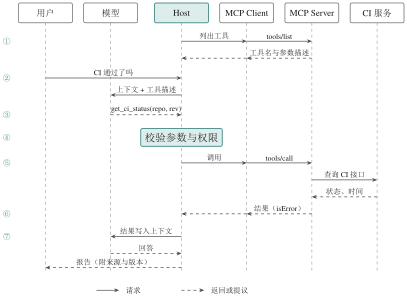
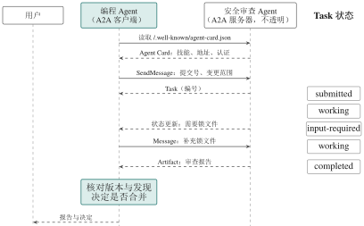

7.6 工具与智能体互操作：MCP 与 A2A
Coding Agent 很少只操作本地文件：它要从代码托管平台读 Issue，从 CI 服务取测试报告，有时还要请另一个团队维护的 Agent 审查依赖风险。本节回答：模型怎样调用外部工具？成百上千的工具怎样以统一方式接入？一项需要自主处理的任务怎样交给另一个 Agent？先从函数调用说起，说明它与传统软件集成的区别和“M×N”问题；再讲统一工具接入的 MCP 和统一智能体协作的 A2A；最后把 Function Calling、MCP、A2A、Skill 四者放在一起比较。结论是：MCP 让 Agent 能使用工具，A2A 让 Agent 能与其他 Agent 合作；协议只规定怎样传递，授权与验收仍由各方的 Harness 负责。
7.6.1 工具调用：模型怎样使用外部能力
工具调用（tool use）指模型借助 API 等接口使用搜索引擎、数据库、计算器、代码执行环境等外部能力，以弥补自身知识和能力的局限：获取实时数据、执行精确计算、操作外部系统。一次调用分三步：模型理解需求、选择工具并给出参数，应用执行后模型再处理返回结果。例如回答“上海明天会下雨吗”，模型不靠记忆猜，而是调用天气 API，再把返回的数据组织成回答。
这种能力的标准形式是 Function Calling（函数调用）。OpenAI 于 2023 年 6 月 13 日随 gpt-3.5-turbo-0613 和 gpt-4-0613 模型在其 API 中推出这一功能：开发者用 JSON Schema（一种描述 JSON 数据结构的格式）声明一组函数的名称、用途和参数，模型在需要时输出一段符合该结构的 JSON，指明要调用哪个函数、参数是什么；真正执行函数的是应用程序，执行结果再作为一条消息送回模型[14]。此后主流模型 API 都提供了类似机制，第 6.3.2 小节介绍的 ReAct 闭环中的“行动”一步，通常就是靠它实现的。
模型调用工具，与传统软件之间的接口集成看起来相似，其实差别很大（表 7-10）。
表 7-10 大模型工具调用与传统软件集成的区别
| 对比项 | 大模型工具调用 | 传统软件集成 |
|---|---|---|
| 集成逻辑 | 模型根据语义动态决定是否调用、调用哪个，具有一定自主性 | 依赖预设接口和固定流程，逻辑由开发者写死 |
| 灵活性 | 可按需调整工具组合，新增工具只需加一份描述 | 新增工具要修改代码并重新部署 |
| 交互方式 | 用户用自然语言提出需求，结果被转化为语言回答 | 用户通过图形界面或指令触发，需要知道功能入口 |
| 智能程度 | 能判断是否需要调用，并对结果做加工和解释 | 机械地组合功能，直接呈现工具返回的结果 |
| 代价 | 选错工具、编造参数的可能；需要权限与验证 | 行为确定，可完整测试 |
Function Calling 解决了“模型怎样表达调用意图”，但没有规定工具一方应以什么格式提供能力。早期每个应用都要为每个工具单独写一份对接代码：工具描述怎么写、参数怎么传、错误怎么报，各家不同。\(M\) 个应用接 \(N\) 个工具，最多要写 \(M\times N\) 份对接，这就是下面 MCP 要解决的问题。
例 7-2 从 \(M\times N\) 到 \(M+N\)
某团队有 5 个 Agent 应用（两款 Coding Agent、一个 IDE 插件、一个内部问答机器人、一个运维助手），要接入 8 个工具（代码托管、CI、缺陷跟踪、数据库、文档库、日历、邮件、搜索）。比较两种接入方式需要编写的对接数量。
| 步骤 | 算什么 | 算式 | 结果 | 这个数从哪来 |
|---|---|---|---|---|
| 1 | 无统一协议的对接数 | \(M\times N=5\times8\) | 40 | 每个应用为每个工具各写一份 |
| 2 | 有统一协议的实现数 | \(M+N=5+8\) | 13 | 每个应用实现一次客户端，每个工具实现一次服务器 |
| 3 | 新增 1 个工具时的增量 | 前：\(M=5\)；后：1 | 5 与 1 | 前者每个应用都要改，后者只写一个服务器 |
| 4 | 新增 1 个应用时的增量 | 前：\(N=8\)；后：1 | 8 与 1 | 前者要对接全部工具，后者只实现一次客户端 |
| 5 | 节省比例 | \((40-13)\div40\) | 67.5% | 步骤 1、2 |
数据流向：应用 → 统一的客户端接口 → 统一的服务器接口 → 工具。
注意：统一协议减少的是接口适配的工作量。每接入一个服务器，宿主仍要审核它的身份和工具清单、配置凭据、测试行为；这部分工作不会因为协议统一而消失。
7.6.2 MCP：统一的工具接入协议
MCP（Model Context Protocol，模型上下文协议）是 Anthropic 于 2024 年 11 月发布的开放协议，用来规范 AI 应用与外部数据源、工具之间怎样交换上下文和调用能力；2025 年 12 月，Anthropic 把它捐给 Linux 基金会新成立的 Agentic AI Foundation（AAIF）管理[15],[16]。截至 2026 年 11 月，最新的稳定规范版本是 2026-07-28。
三个角色 MCP 采用客户端—服务器架构，有三个角色：
Host（宿主）：用户正在使用的 AI 应用，内置大模型，例如一个 Coding Agent 或桌面聊天应用；
Client（客户端）：Host 内部负责与某一个 Server 通信的组件，通常 Host 为每个 Server 建立一个 Client，二者一一对应；
Server（服务器）：把某个软件或数据源的能力按 MCP 格式暴露出来。它可以是本地进程，通过标准输入输出（stdio）通信；也可以是远程服务，通过 Streamable HTTP 通信（每条消息是一次 HTTP POST，回复为一段 JSON 或一段服务器推送事件流）。
消息格式是 JSON-RPC 2.0：一种用 JSON 表示“调用哪个方法、带什么参数、返回什么结果或错误”的远程调用约定。Server 不直接“进入模型”：它返回的是能力描述和数据，由 Host 决定哪些能力对模型可见、哪些结果进入本轮上下文。
Server 提供的三类能力 三类能力的区别在于“由谁决定使用”（表 7-11）。
表 7-11 MCP Server 提供的三类能力
| 能力 | 含义 | Coding Agent 中的例子 | 由谁决定使用 |
|---|---|---|---|
| Tool（工具） | 可调用的动作，有名称和参数描述 | 查询 CI 状态、搜索 Issue、执行受限的数据库查询 | 模型提出调用，Host 审批并执行 |
| Resource（资源） | 可读取的资料，以 URI 标识 | 仓库架构说明、API 描述、构建日志 | Host 或用户决定何时放入上下文 |
| Prompt（提示模板） | 可复用的交互模板 | “根据失败测试生成诊断报告”的模板 | 用户或 Host 选择使用 |
Tool 和 Resource 都可能返回文本，但语义不同：读一份版本化的接口文档更像 Resource，触发一次查询或改变外部状态则是 Tool。把所有数据都包成一个能执行任意请求的 Tool，权限就难以细分；把写操作伪装成 Resource，用户就看不到它的副作用。
2026-07-28 版的主要变化 协议还在快速演进，实现时应固定协议和 SDK 版本。2026-07-28 版有几项影响工程实现的改动[15]：
无状态化：取消了
initialize握手和会话编号，每个请求都在元数据里自带协议版本和客户端能力；服务器必须实现server/discover，客户端可以先调用它，查询服务器支持的版本、能力和身份，再发业务请求；这样即使请求本身不再建立会话，也能在发送前选定双方都支持的协议版本。多轮往返请求（Multi Round-Trip Requests，MRTR）：服务器处理请求时如果还需要用户补充信息，不再反过来向客户端发请求，而是返回一个
input_required的中间结果，客户端补齐信息后重发原请求。原先由服务器主动发起的 Roots（让服务器知道可访问的目录）、Sampling（服务器借用宿主的模型生成文本）和 Logging 三项功能被标为弃用。服务器应按确定的顺序返回工具列表，便于客户端缓存，也提高模型提示缓存的命中率。
有了这些机制再看常见的比喻：MCP 像 AI 应用的“USB-C 接口”——任何设备按同一规格做插头，就能插进任何电脑。USB-C 统一的是插头形状和电气协议，MCP 统一的是能力发现（如 tools/list）、调用（如 tools/call）和消息格式（JSON-RPC）。也有人拿它与 HTTP 类比：HTTP 统一了浏览器与网站的通信，催生了整个互联网服务生态，MCP 有可能对智能体生态起到类似作用。后一点是展望，不是已经发生的事实。
7.6.3 一次 MCP 工具调用怎样走完
假设 Agent 要回答“当前分支的 CI 通过了吗”。图 7-7 给出了完整过程：Host 经 Client 向 Server 查询工具列表（tools/list），得到工具名称和参数描述；Host 把这些描述连同任务放进上下文；模型提出调用 get_ci_status(repo, revision)；Host 校验参数、检查用户权限和目标仓库，再经 Client 发出 tools/call；Server 调用真实的 CI 接口，返回结构化结果；Host 记录这次调用，把必要部分写回上下文，模型据此继续。一句话概括：模型选择工具和参数，Host 决定动作能否发生，Server 提供结果。

图 7-7 一次 MCP 工具调用的时序。①Host 经 Client 发现工具；②③模型在上下文中看到工具描述后提出调用；④Host（高亮）校验参数与权限，模型的提议在这一步才可能变成动作；⑤⑥Client 发出 tools/call，Server 调用外部 CI 服务并返回结构化结果；⑦Host 记录结果并交回模型
宿主还要区分三种结果。成功；工具执行错误——调用本身完成了，但业务或参数出错，以普通结果加 isError: true 返回，模型能看到并据此调整；协议错误——未知工具、请求格式不对等，以 JSON-RPC 错误返回，由宿主处理，不一定交给模型[15]。宿主只判断“有没有收到文本”是不够的。
工程上，工具结果至少还应带上：请求编号、来源服务、查询时刻、目标代码版本、状态或数据、失败类别。CI 结果属于旧的提交，就证明不了当前修改已经通过；Server 返回一段“要求 Agent 忽略用户规则”的文本，它仍然只是低信任的外部数据。MCP 统一的是通信格式，授权、记录和内容边界仍由 Host 实施。
7.6.4 A2A：把任务交给独立的 Agent
MCP 的对面是一个工具：给定输入，返回输出，步骤由调用方组织。有时需要的却是另一个有自主性、有自己执行环境的 Agent——例如请专门的安全审查 Agent 检查新增依赖，它要自己检索、运行检查、必要时追问。A2A（Agent2Agent，智能体间协议）就是为这种任务委托设计的。它由 Google 于 2025 年 4 月发布，同年 6 月捐给 Linux 基金会，2026 年 3 月发布 1.0 版[17]。
参与者 A2A 有三方：用户（使用 Agent 系统完成任务的人或服务）；A2A 客户端（代表用户向远端 Agent 请求操作的一方，通常本身也是一个 Agent）；A2A 服务器（远端 Agent）。远端 Agent 对客户端是不透明的：客户端看不到它内部用什么模型、什么工具、怎样推理，只看到它声明的能力和交付的结果。
核心对象 协议围绕五个对象展开（表 7-12）。
表 7-12 A2A 的核心对象
| 对象 | 含义 |
|---|---|
| Agent Card（智能体名片） | 远端 Agent 发布的 JSON 文档，描述身份、能力（技能）、服务地址和认证要求；1.0 版的约定位置是 /.well-known/agent-card.json，便于发现 |
| Task（任务） | 有状态的工作单元，有唯一编号；记录状态、产物和消息历史，支持长时间、异步的协作 |
| Message（消息） | 客户端与远端之间的一轮交流，带发送方角色；指令、补充上下文、追问、状态说明都以消息传递 |
| Part（部分） | 最小的内容单元，可以是一段文本、一个文件引用或一段结构化数据；消息和产物都由若干 Part 组成 |
| Artifact（产物） | 远端为任务产生的输出，例如一份审查报告；由 Part 组成，一个任务可以有多个产物 |
Message 负责沟通，Artifact 承载交付物，二者分开，长任务结束时才能清楚地检查“到底交付了什么”。Task 的状态包括：已提交（submitted）、执行中（working）、需要输入（input-required）、需要认证（auth-required）、已完成（completed）、失败（failed）、已取消（canceled）、被拒绝（rejected）。状态更新可以通过轮询、流式响应（服务器推送事件）或推送通知（远端向客户端登记的网址发 HTTP 请求）取得，支持哪种由 Agent Card 声明。1.0 版规定了三种传输绑定：基于 HTTP 的 JSON-RPC、gRPC 和 HTTP+JSON（REST 风格）。

图 7-8 一次 A2A 任务委托。编程 Agent 先读取远端的 Agent Card，再以消息提交任务；远端独立执行，中途可转入“需要输入”状态索要材料，最后以 Artifact 交付。右列为 Task 状态的变化；最终验收（高亮）仍由委托方完成
以“请安全审查 Agent 检查新增依赖”为例（图 7-8）：编程 Agent 先读取对方的 Agent Card，确认它有依赖审查的技能和认证方式；发出的消息不能只是“帮我看看”，而要附上锁定的提交号、依赖变更范围、希望得到的风险分类和截止时间。远端创建 Task 后独立工作，中途可能转入“需要输入”状态索要锁文件；最后以 Artifact 交付审查报告。请求方保留父任务的最终验收责任：确认报告对应正确的代码版本，处理审查发现，再决定是否合并。远端一句“没有风险”不能代替本地测试和人工审核。Task 编号应随父任务保存，断线后可以继续查询，避免重复创建同一个远端任务。
7.6.5 Function Calling、MCP、A2A 与 Skill
还有一个常与上述三者混淆的概念：Skill（技能）。Anthropic 于 2025 年推出 Agent Skills，同年 12 月把它作为开放标准发布[18]。一个 Skill 是一个文件夹，核心是一份 SKILL.md，写明“遇到某类任务怎样做”，可附带脚本和参考资料。Agent 平时只加载每个 Skill 的名称和一句话简介，任务需要时才读入完整内容，这叫渐进式加载。截至 2026 年 11 月，Codex、Gemini CLI、GitHub Copilot、Cursor 等工具都已支持这一格式。
四者不在同一层次，彼此有调用关系（表 7-13）：Function Calling 是模型层的机制，模型借它表达“我要调用什么”；MCP 规定 Host 与工具服务器之间怎样发现和调用工具，Host 拿到工具描述后，仍然通过 Function Calling 交给模型；A2A 规定 Agent 与 Agent 之间怎样委托任务；Skill 则是打包给模型看的操作知识：名称和简介常驻上下文，正文和脚本在需要时才读入，其中的步骤可能再调用 MCP 工具或本地脚本。简单地说：MCP 解决“怎样接入和调用工具”，A2A 解决“怎样把任务交给另一个 Agent”，Skill 解决“操作知识怎样打包、按需加载”。
表 7-13 Function Calling、MCP、A2A 与 Skill 的对比
| 对比项 | Function Calling | MCP | A2A | Skill |
|---|---|---|---|---|
| 所在层次 | 模型 API | 宿主与工具服务器之间 | 智能体与智能体之间 | 模型的上下文 |
| 标准化什么 | 模型怎样输出调用意图 | 工具怎样被发现、描述和调用 | 任务怎样委托、跟踪和交付 | 操作知识怎样打包和按需加载 |
| 对方是什么 | 应用内的函数 | 工具、资源、提示模板的提供者 | 有自身目标和执行过程的 Agent | 一份说明文档及附带脚本 |
| 谁组织步骤 | 应用 | 当前 Agent | 远端 Agent（在委托范围内） | 当前 Agent 按说明执行 |
| 状态 | 单次调用 | 单次调用为主 | 有状态的 Task，可跨多轮、异步 | 无状态 |
| 典型失败 | 参数不符合结构、编造参数 | 参数错误、权限拒绝、服务超时 | 需要补充输入、任务失败、产物版本不符 | 说明过时、与仓库事实冲突、被植入恶意脚本 |
| 验收方式 | 应用检查返回值 | 校验结果及其来源、版本 | 校验产物与父任务目标的关系 | 用对照评估检验是否真有帮助 |
辨析
MCP 与 A2A 不能互相替代，也不是二选一。把“查询 CI 状态”包装成一个远端 Agent，会白白增加状态管理和不确定性；把“独立完成一次安全审查”塞进一个工具调用，又会丢掉中途追问、长时运行和产物交付的能力。判断标准是：对方只需按输入给输出，用 MCP；对方需要自己组织步骤，用 A2A。同一进程内的子 Agent 也可以用私有接口协作，不一定非用 A2A。
7.6.6 多 Agent 协作：拆分、授权与合并
A2A 只建立了通信方式，多 Agent 协作（第 6.6 节）还需要一个明确的父任务。父任务要规定每个子任务的输入版本、负责范围、输出格式、截止时间和验收方式。可并行的代码修改各用独立的工作树，避免在同一目录互相覆盖；父 Agent 收到结果后还要检查冲突、合并代码、运行整体验证。只读的调研任务可以让多个 Agent 分头检索再比较来源与结论；互相依赖的任务过早并行，只会增加等待和返工。
两种连接都要遵守最小权限和可追溯。MCP Server 不应因为连接成功就拿到整个仓库或全部账户凭据；A2A 远端 Agent 也只应收到完成委托所需的材料。跨系统传递的内容可能含有隐私数据或恶意指令：发送前做范围筛选，接收后保留来源、按低信任数据处理。在本章案例里，Agent 调用 Calendar、Mail、Tasks 三个 Mock 服务属于工具层，Mock 查询失败时当前 Agent 可以换个查询或报告工具错误；把“检查提醒规则是否满足隐私规范”委托给独立的审查 Agent 属于任务层，审查失败时父任务要决定重试、换 Agent 或请人接手，并且不能把缺失的审查报告写成“已通过”。
本节要点
Function Calling 让模型表达调用意图；MCP 把接口适配的编写量从 \(M\times N\) 降到 \(M+N\)（审核、凭据和测试仍要逐个服务器做）；A2A 让 Agent 委托有状态的任务；Skill 把操作知识按需加载进上下文。
MCP 的三个角色是 Host、Client、Server，三类能力是 Tool、Resource、Prompt；2026-07-28 版改为无状态并引入多轮往返请求。
A2A 的五个对象是 Agent Card、Task、Message、Part、Artifact；父任务保留最终验收责任。